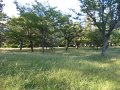

Nicholas Ovenhouse
ovenhou3@math.msu.edu
In December of 2012, I graduated from Michigan State University with a B.S in Computer Science. Computer programming has been a hobby of mine since high school, became my major area of study during my undergraduate years, and still remains one of my primary interests. Below are just a couple of the projects I have worked on in the last few years.
Hom4PS

"Hom4PS" is an acronym for homotopy continuation method for solving polynomial systems. It is a software package, developed over the years by a team at Michigan State University led by Tien-Yien Li. The package finds numerical solutions to systems of polynomial equations, using a number of homotopy continuation algorithms. From 2011 through 2013, I worked under the supervision of Tianran Chen (Michigan State University) as a research assistant, in development of HOM4PS-3.0.
Fractal
Fractal is a small C++ program I wrote to draw bitmap images of certain fractal patterns. I created the first basic version of the program as a final project for math 451 (Numerical Analysis) at MSU, and have continued to work on it since. Click here to see some images produced by the program.